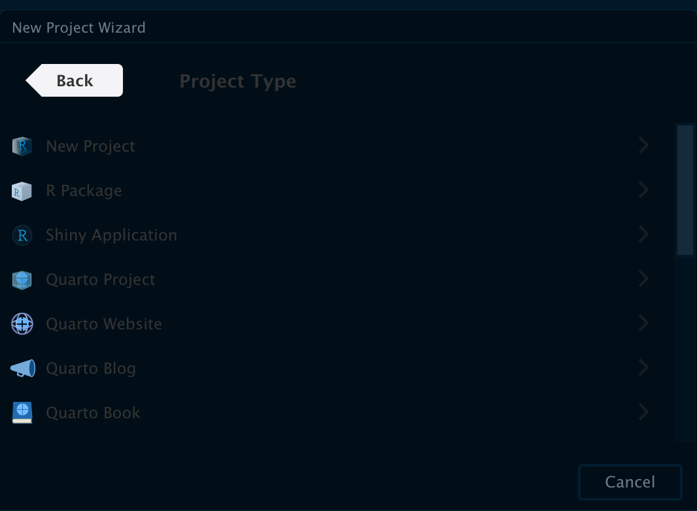
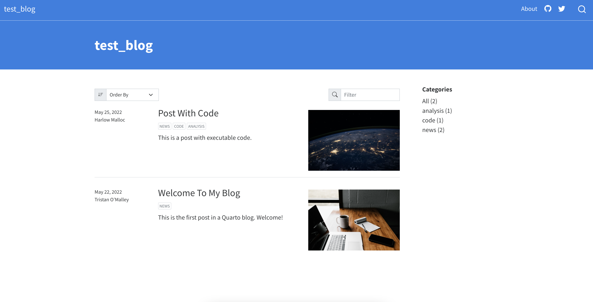

Creating minimal website with Quarto from an existing distill website
My process in building a quick and great looking website in Quarto
Distill vs RBlogdown
I recently decided to start blogging to journal and track my coding habits. One of the main things I wanted to do to that end was build a personal website as a online presence that’s not a social media platform like linkedin. Wordpress was the obvious choice but I wasn’t a big fan of how it handled code chunks. Additionally, I felt it was better to make something personal and something that could be customizable, but only to a point where it didn’t feel overwhelming.
Since I was using R for most of my work, I decided to checkout the two main options available: Distill and Blogdown. After a bit of research i went with Distill mainly because of its simplicity and because I preferred the look of the sites it rendered after checking a lot of themes and demos. Additionally playing around with both R packages I liked the way it behaved.
Moving Away from Distill
However, I have been itching to try out Quarto ever since I heard of it and I was very intrigued by a one size fits all solution to all my writing needs and possibly publishing needs. There are a number of reasons1 already highlighted2 that make quarto a very3 attractive option for people in academia4, so I will not go into further details behind my choice. Moreover, the customization of documents and easier integration of Python (another common language I use) made me decide to see if it was possible to switch from rmd to qmd. I decided to check and see if anyone had tried to convert an existing webpage/blog from distill to Quarto and found a brilliant blog post5 by Danielle Navarro. It turns out their needs mirrored mine so I used their post as well the existing sourcecode repo as a blueprint to convert my own site. Additionally another blogpost by Nick Tierney6 is also worth checking out. This article isn’t meant to be a standalone guide but rather a personal experience journal of how I found the overall process to be.
Build and render a Quarto Webpage
I now detail the quick and hopefully simple procedure to convert (or setup) your own personal quarto webpage.
Install quarto
- I installed it on RStudio because I am comfortable with using RStudio but it can just as easily be used on other code editors like VSCode.
Inside RStudio, click File -> Select New Project -> Select the Quarto Website or Blog as the template which will be the starting point depending on your need.

RStudio takes a few seconds to a minute to get the basic template ready, along with an example blog post which will act as the backbone on which the site will be built.
One the blog is built, render it for the first time using the “build” tab in RStudio and clicking “Render Website” to see what it looks like without any customization
The basic (example) template made by RStudio is now ready, and can be deployed as such if needed.
Adding Content & Website Configuration
Close all files, and RStudio so the rendered website is shut off.
I wanted to start with a simple 2-page website, with a blog and a landing page (index), so I deleted any other stray .qmd files except the files named “about” and “blog”.
By default the quarto rendering will make the file named index.qmd the landing page to your domain.
A blog template has the blogs listed as index.qmd so a quick way to make the landing page different is by swapping file names.
Rename index.qmd to blog.qmd and about.qmd to index.qmd to make the about-me page as the landing page
Re-render the blog to see if changes worked (they should)

Check by clicking the site banner, which should now redirect to the recently renamed page.

Edit the blog and about pages by adding all the details like socials, website links, etc
_quarto.yml is the main file that controls all the site-wide settings, make desired changes to that file with the help of settings from the official quarto docs (see footnotes)
posts/_metadata.yml file is another important file that controls settings for the blog, including the useful “freeze” option7
Add remove the navbar options, everything in the parent folder (and more) can be an item on the navbar if needed.
NOTE: quarto uses lowercase
trueandfalseunlike RMarkdown (a welcome change, for me, personally).If you have any blog-posts with distill like me, simply mass re-name the rmd files to qmd and they will work with the new sites (more on this below).
Re-render the site and the entire site should now be populated with the changes and older posts (if applicable)
Now the basic site is working and you can deploy it as is.
Customize the website
The basic template of the website looks great, but I wanted to customize it a bit further, and add some elements like the table of contents to the qmd files that were renamed from the existing distill rmd files. In order to customize it further, knowing a bit of scss or css helps:
Theme changes:
Custom themes can be added by creating and modifying .scss files (see example theme8 file in my repository)
CSS files should also work if you’re more comfortable working with css than scss.
Default bootstrap themes can be changed from a list of available themes on the Quarto website9
Change font sizes, font families and other font properties by importing fonts from Google-Fonts api inside the scss files, or using a different type of font face.
Customize the navbar, and the footer in the .yml file
Unlike the distill website, footer is added as page-footer inside the _quarto.yml file.
Adding icons is different than the other blogdown and distill sites, quarto uses bootstrap icon packs, not font awesome, so some icons (like ORCiD) are unavailable
Quarto posts also support ORCiD IDs, but the tag is now
orcidnotorcid_idAdded utteranc.es commenting after installing the app on Github.
Once you are happy with the changes and the theme, deploy it.10
I used Netlify to deploy my site so I had to change the repository folder (distill default outputs to docs/ folder while Quarto website outputs to _site/)
Final Result
The result was my website:
Source Code
And the source code can be found on my GitHub:
Things to Do
I am still tweaking around constantly with the theme, and in the future would like to make some improvements including:
A Dark mode toggle
Add more pages, like a spot for publications & projects
A html resume (possibly like pagedown resume)
Set-up a redirects file to shorten post titles to make them easier to share
Final Thoughts
The more I played with Quarto, the more I’ve enjoyed working with it. The process of switching was fairly straightforward, especially with the number of useful tutorials and source code11 available . This article isn’t meant to be a standalone guide but rather a personal experience journal of how I found the overall process to be.
Further Reading
Further Reading, and useful links that helped me with the site: (See footnotes)
Footnotes
https://yihui.org/en/2022/04/quarto-r-markdown/↩︎
https://www.apreshill.com/blog/2022-04-we-dont-talk-about-quarto/↩︎
https://community.rstudio.com/t/i-use-like-r-markdown-why-should-i-try-out-quarto/133752/2↩︎
https://jasoncausey.net/post/quarto_early_impressions/↩︎
https://blog.djnavarro.net/posts/2022-04-20_porting-to-quarto/↩︎
https://www.njtierney.com/post/2022/04/11/rmd-to-qmd/↩︎
https://quarto.org/docs/projects/code-execution.html↩︎
https://github.com/SidhuK/karat_codes↩︎
https://quarto.org/docs/websites/↩︎
https://quarto.org/docs/websites/publishing-websites.html↩︎
https://github.com/quarto-dev/quarto-web↩︎
Reuse
Citation
@online{sidhu2022,
author = {Karat Sidhu},
editor = {},
title = {Converting a Distill Website to {Quarto}},
date = {2022-05-26},
url = {https://karatsidhu.com/posts/make-quarto-website/make-quarto-website.html},
langid = {en}
}